Source & review coverageمنبع و پوشش مرور
Analysis of the supplied 16-page manuscript, including its methods, reported experiments, limitations, appendices, 6 numbered figure views and 12 table records. Captions below are bilingual summaries; original complete captions, tables, and pages remain available. Only explicitly printed values are transcribed. Publication status, external code, datasets and API claims have not been independently authenticated or executed. Prices, model names and versions are historical statements of this source, not current service guidance.تحلیل نسخه 16 صفحهای ارائهشده، شامل روش، آزمایشهای گزارششده، محدودیتها، پیوستها، 6 نمای شکل شمارهدار و 12 رکورد جدول. عنوانها خلاصه دوزبانهاند؛ عنوان کامل، جدول و صفحات اصلی در دسترساند. فقط مقادیر چاپشده نقل میشوند. وضعیت انتشار، کد بیرونی، داده و ادعای API مستقلاً تأیید یا اجرا نشدهاند. قیمت، نام و نسخه مدل، گزارش تاریخی همین منبع است و راهنمای سرویس فعلی نیست.
Identity, explicit research questions & scopeمشخصات، پرسش صریح و دامنه
Yuchen Ling, Shengcheng Yu, Zhenyu Chen and Chunrong Fang; the supplied manuscript studies whether decision-level savings transfer to complete agent tasks. RQ1 asks about effectiveness, RQ2 about efficiency transfer and RQ3 about failure/recovery. It reports an empirical study rather than a numbered preregistered hypothesis test.Yuchen Ling، Shengcheng Yu، Zhenyu Chen و Chunrong Fang؛ نسخه ارائهشده انتقال صرفهجویی تصمیم به وظیفه کامل را میسنجد. RQ1 اثربخشی، RQ2 انتقال کارایی و RQ3 شکست/بازیابی است. مطالعه تجربی است، نه آزمون فرضیه شمارهدار از پیش ثبتشده. Source · PDF p. 1Source · PDF p. 2Source · PDF p. 3
Agents, shared-interface controls & repetitionsعاملها، کنترل قرارداد مشترک و تکرار
Five families use text-only observations: ReAct/Reflexion on all 134 ALFWorld valid_unseen tasks and T3A/AutoDroid/FastAgent on 116 fixed AndroidWorld task instances. Each configuration runs three times at seed0, giving4,500 executions across 12 configurations. Original B, Jev J and ALFWorld-only LLM-Choice C distinguish changing the selection interface from changing the model.پنجخانواده مشاهده فقطمتن دارند: ReAct/Reflexion روی ۱۳۴ وظیفه valid_unseen در ALFWorld و T3A/AutoDroid/FastAgent روی ۱۱۶ نمونه ثابت AndroidWorld. هرپیکربندی سهبار بابذر ۰ ودرکل ۱۲ پیکربندی ۴۵۰۰ اجرا دارد. B اصلی، J مربوط به Jev و C انتخاب LLM فقط در ALFWorld تغییرقرارداد انتخاب رااز تغییرمدل جدا میکنند. Source · PDF p. 2Source · PDF p. 3Source · PDF p. 4
Jev 1.13.0 selects admissible commands or THINK in ALFWorld and UI events/tools in mobile agents; gpt-5.6-luna performs LLM decisions and auxiliary generation/reflection. Budgets are matched within families, not across them: ReAct49 steps/600 s, Reflexion up to 10 trials of 49 steps/6,000 s, AndroidWorld600 s and complexity-based steps. FastAgent-J executes one tool per step while B may batch calls, so B–J is an integration comparison.Jev1.13.0 در ALFWorld فرمان مجاز یا THINK ودرموبایل رویداد/ابزار را انتخاب میکند؛ gpt-5.6-luna تصمیم LLM وتولید/بازاندیشی کمکی دارد. بودجه درونخانواده برابر است نه میانخانواده: ReAct ۴۹ گام/۶۰۰ ثانیه، Reflexion حداکثر ۱۰ تلاش ۴۹ گامی/۶۰۰۰ ثانیه، AndroidWorld ۶۰۰ ثانیه وگام تابع پیچیدگی. FastAgent-J تکابزار و B گاهی دستهای است؛ پس B–J مقایسه ادغام است. Source · PDF p. 3Source · PDF p. 4
Outcome metrics, accounting & statistical inferenceمعیار پیامد، حسابداری و استنباط آماری
Task costs include every decision and auxiliary call; decision costs cover action selection only. Report all attempts, each configuration’s own successes, matched task–run successes and resources per delivered success separately. The last divides all attempted resources, including failures, by successful executions. A cheaper failed attempt is not automatically an efficiency improvement.هزینه وظیفه همه فراخوانی تصمیم وکمکی و هزینه تصمیم فقط انتخاب اقدام راشامل میشود. همه تلاشها، موفقیت خاص هرپیکربندی، موفقیت جفتی وظیفه–تکرار و منبع بهازای موفقیت تحویلشده جدا هستند. مورد آخر همه منبع حتی شکست رابر تعداد موفقیت تقسیم میکند. تلاش شکستخورده ارزان الزاماً بهبودکارایی نیست. Source · PDF p. 4Source · PDF p. 6Source · PDF p. 7Source · PDF p. 11
Means and sample SD are over three runs. Paired task-cluster bootstrap uses20,000 replicates retaining all three runs of both variants within each sampled task; intervals are pointwise with no multiplicity correction. The fixed task instance/seed design measures repeat variability on these instances, not new environment distributions. Units mUSD and µUSD must remain distinct.میانگین وانحراف معیار نمونه رویسهتکرار است. بازنمونه جفتی خوشهوظیفه ۲۰۰۰۰ بار هر سهتکرار دو نسخه راکنارهم نگه میدارد؛ بازه نقطهای وبدون تصحیح چندگانگی است. نمونه/بذرثابت تغییرپذیری همان نمونه رامیسنجد، نه توزیع محیط تازه. واحد mUSD وµUSD باید جدا بماند. Source · PDF p. 4Source · PDF p. 9Source · PDF p. 11Source · PDF p. 13Source · PDF p. 14
Effectiveness, efficiency transfer & failure analysisاثربخشی، انتقال کارایی و تحلیل شکست
ReAct-J/Reflexion-J success is96.02%/98.01%, versus 97.51%/99.75% for B; with shared C the differences narrow to−1.00/0.00 points. T3A-J and FastAgent-J lose13.22/18.10 points relative to B with intervals excluding zero. Lower decision cost 66.1–78.4% and latency73.9–81.5% do not guarantee whole-task gains: FastAgent task time rises0.7% and T3A cost per success rises7.7%, the latter interval including zero.موفقیت ReAct-J/Reflexion-J برابر ۹۶٫۰۲٪/۹۸٫۰۱٪ دربرابر B برابر ۹۷٫۵۱٪/۹۹٫۷۵٪؛ با C مشترک اختلاف ۱−/۰ واحد میشود. T3A-J و FastAgent-J نسبت به B افت ۱۳٫۲۲/۱۸٫۱۰ واحد با بازه غیرصفر دارند. کاهش هزینه تصمیم ۶۶٫۱–۷۸٫۴٪ وتأخیر ۷۳٫۹–۸۱٫۵٪ بهبودکل را تضمین نمیکند: زمان وظیفه FastAgent برابر ۰٫۷٪ بیشتر وهزینه موفقیت T3A برابر ۷٫۷٪ بیشتر با بازه شامل صفر است. Source · PDF p. 4Source · PDF p. 5Source · PDF p. 6Source · PDF p. 7Source · PDF p. 12Source · PDF p. 14
Outcome-selected trace groups contain19 persistent Jev-loss pairs,3 reverse-gain pairs and21 mixed pairs:258 executions, of which251 have codable substantive actions. Two annotators apply seven overlapping behavior labels and a third adjudicates. Recovery, search, target/prerequisite errors and premature completion are connected to observed cases; these selected-group frequencies are not population failure rates.گروه مسیر منتخب برحسب پیامد ۱۹ زوج شکست پایدار Jev، ۳ زوج بردمعکوس و ۲۱ زوج مختلط دارد: ۲۵۸ اجرا که ۲۵۱ اقدام قابل کدگذاری دارند. دوبرچسبگذار هفترفتار همپوشان وسوم داوری میکند. بازیابی، جستوجو، هدف/پیششرط وپایان زودرس به مورد مشاهده وصلاند؛ فراوانی گروه منتخب نرخ شکست کل جمعیت نیست. Source · PDF p. 7Source · PDF p. 8Source · PDF p. 12Source · PDF p. 13Source · PDF p. 14Source · PDF p. 15Source · PDF p. 16
Author-stated strengths, limitations & future workقوت، محدودیت و آینده از دید نویسندگان
The paper connects selection latency to auxiliary reasoning, environment interaction, failed recovery and verified completion. Reflexion-J initially succeeds383/402 times versus B376/402, but recovers only 11/19 initial failures versus 25/26. More reasoning can preserve a wrong premise; the authors recommend explicit progress, prerequisite and final-state checks rather than relying on reflection alone.مقاله تأخیرانتخاب رابه استدلال کمکی، تعامل محیط، شکست بازیابی وپایان تأییدشده وصل میکند. Reflexion-J ابتدا ۳۸۳/۴۰۲ دربرابر B ۳۷۶/۴۰۲ موفق است ولی فقط ۱۱/۱۹ شکست اولیه رادر برابر ۲۵/۲۶ بازیابی میکند. استدلال بیشتر میتواند فرض غلط راحفظ کند؛ بررسی صریح پیشرفت، پیششرط وحالت نهایی به جای اتکای تنها به بازاندیشی پیشنهاد میشود. Source · PDF p. 7Source · PDF p. 8Source · PDF p. 16
Limits: selected text-only workflows, only fixed task instances and three repeats, integration/interface confounds, unequal family budgets, hosted inference variation and some retry/imputed-usage accounting uncertainty. Transfer to visual agents, longer workflows and new tasks needs evaluation. The case appendix distinguishes evaluator acceptance from external geographic truth and final-response format from internal success flags.محدودیت: گردشکارفقطمتن منتخب، نمونه ثابت وسهتکرار، مخدوشسازی ادغام/قرارداد، بودجه نابرابر خانواده، تغییرپذیری سرویس وابهام حسابداری تلاشمجدد/مصرف تخمینی. انتقال به عامل بصری، گردش بلند ووظیفه تازه آزمون میخواهد. پیوست پذیرش ارزیاب راازحقیقت جغرافیایی و قالب پاسخ نهایی راازپرچم موفقیت داخلی جدا میکند. Source · PDF p. 9Source · PDF p. 14Source · PDF p. 15Source · PDF p. 16
Key reported resultsنتایج کلیدی گزارششده
All five integrations reduce decision costs, but T3A/FastAgent lose13.22/18.10 success points. T3A’s cost per delivered success rises68.70→73.97 mUSD with an interval spanning zero; FastAgent time per success rises239.4→377.8 s with a positive paired-difference interval.هرپنجادغام هزینه تصمیم راکم میکنند ولی T3A/FastAgent افت ۱۳٫۲۲/۱۸٫۱۰ واحدموفقیت دارند. هزینه هرموفقیت T3A از ۶۸٫۷۰ به ۷۳٫۹۷ mUSD با بازه شامل صفر وزمان هرموفقیت FastAgent از ۲۳۹٫۴ به ۳۷۷٫۸ ثانیه با بازه اختلاف مثبت میرسد. Source · PDF p. 6Source · PDF p. 7Source · PDF p. 14
Figures, captions & extracted evidenceشکلها، عنوانها و شواهد استخراجشده
Figure 1
Interface / study settingرابط یا بستر مطالعه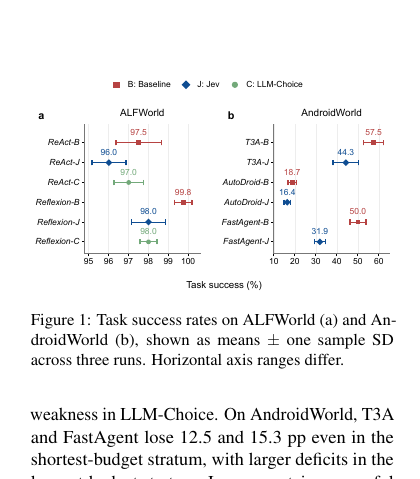
How to read this figureراهنمای خواندن شکل
Identify the inputs, outputs or physical setting visible in the original. Use the caption to distinguish an illustrative screen or setup from a measured experimental result.ورودی، خروجی یا بستر فیزیکی نمایشدادهشده را مشخص کنید. با عنوان شکل، تصویر نمونه رابط یا تجهیزات را از نتیجه آزمایش اندازهگیریشده جدا کنید.
Reader guidance · not an additional author claimراهنمای مطالعه · ادعای اضافی نویسنده نیستWhat this figure showsاین شکل چه نشان میدهد؟
Means±one sample SD cover three repeats. ALFWorld includes shared-interface C controls; AndroidWorld does not. Axis ranges differ between panels, so compare printed values rather than marker distance.میانگین±یک انحراف معیار نمونه ازسهتکرار است. ALFWorld کنترل C قراردادمشترک دارد ولی AndroidWorld ندارد. دامنه محورپنلها متفاوت است؛ مقدار چاپی را مقایسه کنید، نه فاصله نشانگر.
Reported values & evidence limitsمقادیر گزارششده و حدود شواهد
ReAct B/J97.51/96.02%; Reflexion99.75/98.01%; T3A57.47/44.25%; AutoDroid18.68/16.38%; FastAgent50.00/31.90% (Table5).B/J برای ReAct: ۹۷٫۵۱/۹۶٫۰۲٪؛ Reflexion: ۹۹٫۷۵/۹۸٫۰۱٪؛ T3A: ۵۷٫۴۷/۴۴٫۲۵٪؛ AutoDroid: ۱۸٫۶۸/۱۶٫۳۸٪؛ FastAgent: ۵۰/۳۱٫۹٪ (جدول ۵).
Figure 2
Source visualتصویر منبع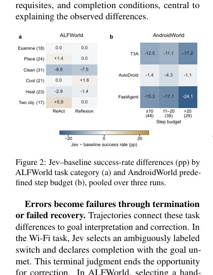
How to read this figureراهنمای خواندن شکل
Read the original labels and caption first, then use the explanation and evidence note below. Printed quantities are preserved separately from reviewer interpretation.ابتدا برچسبها و عنوان اصلی را بخوانید و سپس توضیح و یادداشت شاهد را بررسی کنید. مقدار چاپشده از تفسیر مرورگر جدا نگه داشته شده است.
Reader guidance · not an additional author claimراهنمای مطالعه · ادعای اضافی نویسنده نیستWhat this figure showsاین شکل چه نشان میدهد؟
ALFWorld task categories and AndroidWorld budget strata are different stratifications. The same total success can hide failures on cleaning or short mobile tasks; sequence length alone does not explain difficulty.نوع وظیفه ALFWorld وطبقه بودجه AndroidWorld تقسیمهای متفاوتاند. موفقیت کل میتواند شکست تمیزکردن یاوظیفه کوتاه موبایل راپنهان کند؛ طول مسیر بهتنهایی سختی راتوضیح نمیدهد.
Reported values & evidence limitsمقادیر گزارششده و حدود شواهد
Narrative: ALFWorld cleaning deficits about8.6 and7.5 points; shortest mobile stratum T3A/FastAgent deficits12.5/15.3 points. Other cells remain in source.متن: افت تمیزکردن ALFWorld حدود ۸٫۶ و ۷٫۵ واحد؛ کوتاهترین طبقه موبایل افت T3A/FastAgent برابر ۱۲٫۵/۱۵٫۳ واحد. سایر سلولها درمنبعاند.
Figure 3
Comparison & resultsمقایسه و نتایج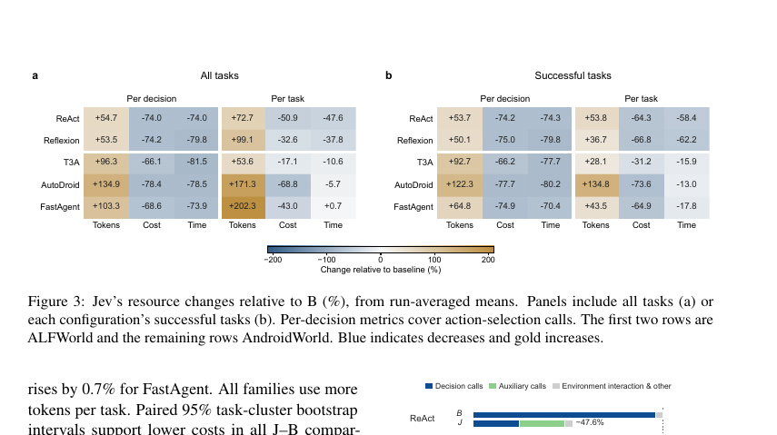
How to read this figureراهنمای خواندن شکل
Check the axes, units, panel labels and the caption’s definition of better performance. Compare methods under the stated conditions; keep uncertainty, tradeoffs and normalization separate from headline gains.محور، واحد، پنل و تعریف عملکرد بهتر در عنوان را بررسی کنید. روشها را در شرایط بیانشده مقایسه و عدمقطعیت، مصالحه و نرمالسازی را از بهبود شاخص اصلی جدا نگه دارید.
Reader guidance · not an additional author claimراهنمای مطالعه · ادعای اضافی نویسنده نیستWhat this figure showsاین شکل چه نشان میدهد؟
Separate all attempts from each variant’s own successes. Columns compare tokens, cost andtime; opposite signs are possible because cheaper decisions can require more interactions or auxiliary work.همه تلاشها راازموفقیت خاص هرنسخه جدا کنید. ستون توکن، هزینه وزمان را میسنجد؛ علامت مخالف ممکن است چون تصمیم ارزان تعامل یاکارکمکی بیشتر بخواهد.
Reported values & evidence limitsمقادیر گزارششده و حدود شواهد
All-task decision cost reductions66.1–78.4%; FastAgent tokens/task+202.3%, cost−43.0%, time+0.7%.کاهش هزینه تصمیم همهوظیفه ۶۶٫۱–۷۸٫۴٪؛ FastAgent توکن/وظیفه ۲۰۲٫۳٪+، هزینه ۴۳٪−، زمان ۰٫۷٪+.
Figure 4
Source visualتصویر منبع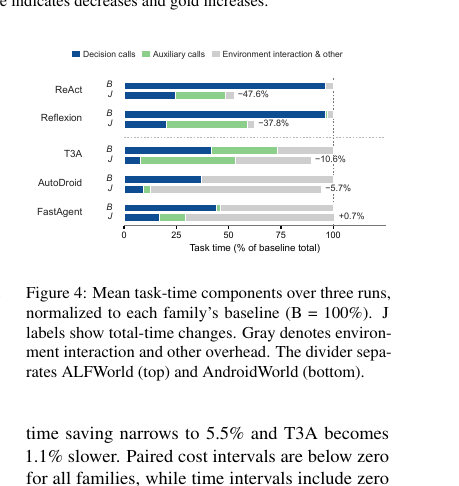
How to read this figureراهنمای خواندن شکل
Read the original labels and caption first, then use the explanation and evidence note below. Printed quantities are preserved separately from reviewer interpretation.ابتدا برچسبها و عنوان اصلی را بخوانید و سپس توضیح و یادداشت شاهد را بررسی کنید. مقدار چاپشده از تفسیر مرورگر جدا نگه داشته شده است.
Reader guidance · not an additional author claimراهنمای مطالعه · ادعای اضافی نویسنده نیستWhat this figure showsاین شکل چه نشان میدهد؟
Bars normalize to each family’s B total, not to one universal runtime. Decision, auxiliary andenvironment components explain why selection speed does not transfer one-for-one.میله به کل B هرخانواده نرمال است، نه زمان مرجع همگانی. اجزای تصمیم، کمکی ومحیط علت عدمانتقال یکبهیک سرعت انتخاب را نشان میدهند.
Reported values & evidence limitsمقادیر گزارششده و حدود شواهد
ReAct selection68.31→17.25 s butadds17.23 s auxiliary; T3A auxiliary67.47→96.99 s; AutoDroid non-model164.43→213.37 s.انتخاب ReAct از ۶۸٫۳۱ به ۱۷٫۲۵ ثانیه ولی ۱۷٫۲۳ ثانیه کمکی اضافه میشود؛ کمکی T3A از ۶۷٫۴۷ به ۹۶٫۹۹؛ غیرمدلی AutoDroid از ۱۶۴٫۴۳ به ۲۱۳٫۳۷.
Figure 5
Source visualتصویر منبع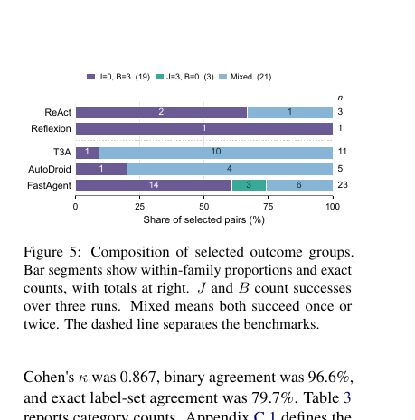
How to read this figureراهنمای خواندن شکل
Read the original labels and caption first, then use the explanation and evidence note below. Printed quantities are preserved separately from reviewer interpretation.ابتدا برچسبها و عنوان اصلی را بخوانید و سپس توضیح و یادداشت شاهد را بررسی کنید. مقدار چاپشده از تفسیر مرورگر جدا نگه داشته شده است.
Reader guidance · not an additional author claimراهنمای مطالعه · ادعای اضافی نویسنده نیستWhat this figure showsاین شکل چه نشان میدهد؟
Segments count persistent losses, gains andmixed outcomes across families. These cases were selected because of outcomes; their behavior frequencies cannot be generalized to every execution.بخشها شکست پایدار، برد ومختلط را درخانوادهها میشمارند. انتخاب براساس پیامد است؛ فراوانی رفتار را نمیتوان به همه اجراها تعمیم داد.
Reported values & evidence limitsمقادیر گزارششده و حدود شواهد
19loss+3gain+21mixed=43family–task pairs;258 executions;251codable records after exclusions.۱۹ شکست+۳ برد+۲۱ مختلط=۴۳ زوج خانواده–وظیفه؛ ۲۵۸ اجرا و ۲۵۱ رکورد کدپذیر پس ازحذف.
Figure 6
Comparison & resultsمقایسه و نتایج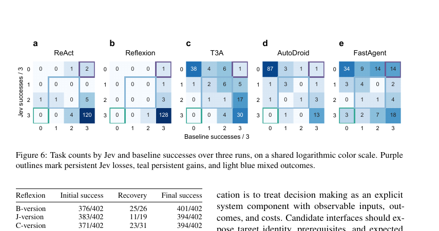
How to read this figureراهنمای خواندن شکل
Check the axes, units, panel labels and the caption’s definition of better performance. Compare methods under the stated conditions; keep uncertainty, tradeoffs and normalization separate from headline gains.محور، واحد، پنل و تعریف عملکرد بهتر در عنوان را بررسی کنید. روشها را در شرایط بیانشده مقایسه و عدمقطعیت، مصالحه و نرمالسازی را از بهبود شاخص اصلی جدا نگه دارید.
Reader guidance · not an additional author claimراهنمای مطالعه · ادعای اضافی نویسنده نیستWhat this figure showsاین شکل چه نشان میدهد؟
Each cell counts tasks with 0–3 successes for B and J. Shared logarithmic color andmarked persistent-loss/gain cells expose instability hidden by average success.هرسلول تعدادوظیفه با ۰ تا ۳ موفقیت برای B و J است. رنگ لگاریتمی مشترک وسلول شکست/بردپایدار ناپایداری پنهان میانگین را نشان میدهد.
Reported values & evidence limitsمقادیر گزارششده و حدود شواهد
Perfamily task denominators134 ALFWorld or116 AndroidWorld; do not sum grid counts as three independent task samples.مخرج وظیفه هرخانواده ۱۳۴ در ALFWorld یا ۱۱۶ در AndroidWorld است؛ سلولها را سهنمونه مستقل وظیفه جمع نکنید.
Tables & numerical evidenceجدولها و شواهد عددی
Table 1 · B/J/C configurations and benchmarksپیکربندی B/J/C ومعیارها
Original table and all printed entries are retained in the source view. Read its caption, units, sample size and footnotes together; values are not estimated from plots.جدول اصلی و تمام مقادیر چاپشده در نمای منبع حفظ شدهاند. عنوان، واحد، اندازه نمونه و پانوشت را با هم بخوانید؛ مقداری از نمودار تخمین زده نشده است.
Table 1 · PDF p. 4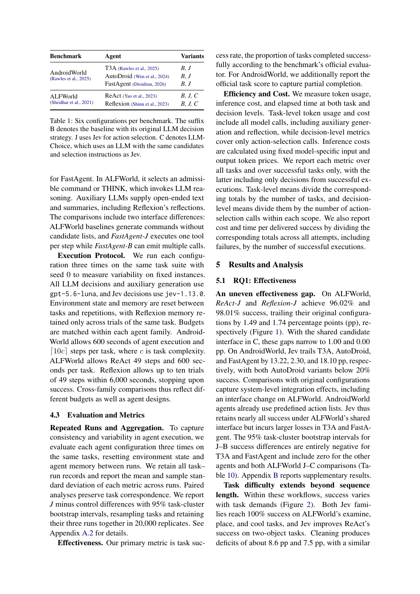
Table 2 · Matched successes, failure spending and delivered outcomesموفقیت جفتی، هزینه شکست وتحویل
Original table and all printed entries are retained in the source view. Read its caption, units, sample size and footnotes together; values are not estimated from plots.جدول اصلی و تمام مقادیر چاپشده در نمای منبع حفظ شدهاند. عنوان، واحد، اندازه نمونه و پانوشت را با هم بخوانید؛ مقداری از نمودار تخمین زده نشده است.
Table 2 · PDF p. 7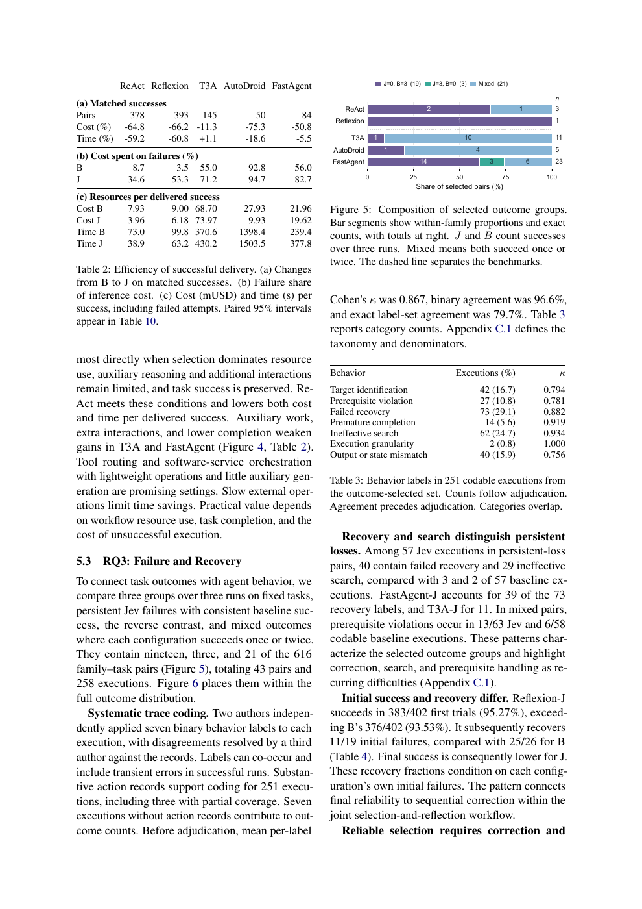
Table 3 · Overlapping behavior codes and agreementکدرفتار همپوشان وتوافق
Original table and all printed entries are retained in the source view. Read its caption, units, sample size and footnotes together; values are not estimated from plots.جدول اصلی و تمام مقادیر چاپشده در نمای منبع حفظ شدهاند. عنوان، واحد، اندازه نمونه و پانوشت را با هم بخوانید؛ مقداری از نمودار تخمین زده نشده است.
Table 3 · PDF p. 7Table 4 · Initial success, recovery and final successموفقیت اولیه، بازیابی ونهایی
Original table and all printed entries are retained in the source view. Read its caption, units, sample size and footnotes together; values are not estimated from plots.جدول اصلی و تمام مقادیر چاپشده در نمای منبع حفظ شدهاند. عنوان، واحد، اندازه نمونه و پانوشت را با هم بخوانید؛ مقداری از نمودار تخمین زده نشده است.
Table 4 · PDF p. 8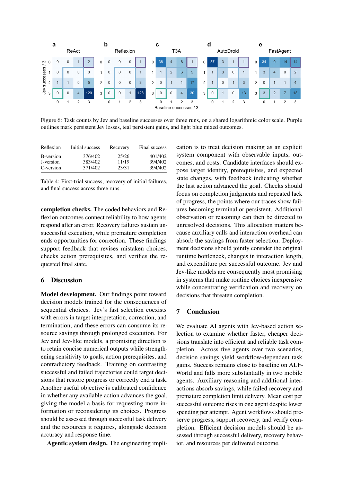
Table 5 · Success, SD and all-three consistencyموفقیت، انحراف معیار وپایداری سهتکرار
Original table and all printed entries are retained in the source view. Read its caption, units, sample size and footnotes together; values are not estimated from plots.جدول اصلی و تمام مقادیر چاپشده در نمای منبع حفظ شدهاند. عنوان، واحد، اندازه نمونه و پانوشت را با هم بخوانید؛ مقداری از نمودار تخمین زده نشده است.
Table 5 · PDF p. 12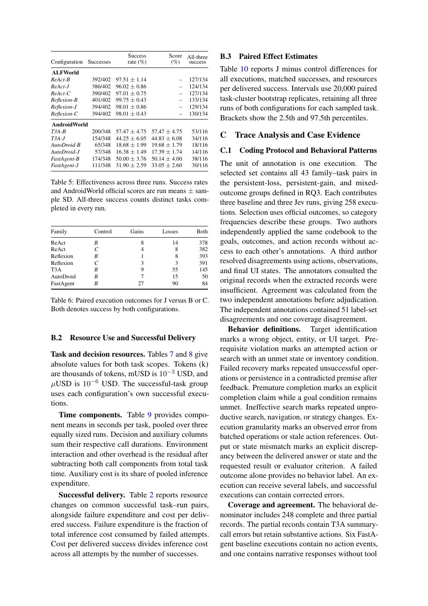
Table 6 · Paired gains, losses and both-successبرد، باخت وموفقیت مشترک جفتی
Original table and all printed entries are retained in the source view. Read its caption, units, sample size and footnotes together; values are not estimated from plots.جدول اصلی و تمام مقادیر چاپشده در نمای منبع حفظ شدهاند. عنوان، واحد، اندازه نمونه و پانوشت را با هم بخوانید؛ مقداری از نمودار تخمین زده نشده است.
Table 6 · PDF p. 12Table 7 · ALFWorld absolute resourcesمنابع مطلق ALFWorld
Original table and all printed entries are retained in the source view. Read its caption, units, sample size and footnotes together; values are not estimated from plots.جدول اصلی و تمام مقادیر چاپشده در نمای منبع حفظ شدهاند. عنوان، واحد، اندازه نمونه و پانوشت را با هم بخوانید؛ مقداری از نمودار تخمین زده نشده است.
Table 7 · PDF p. 13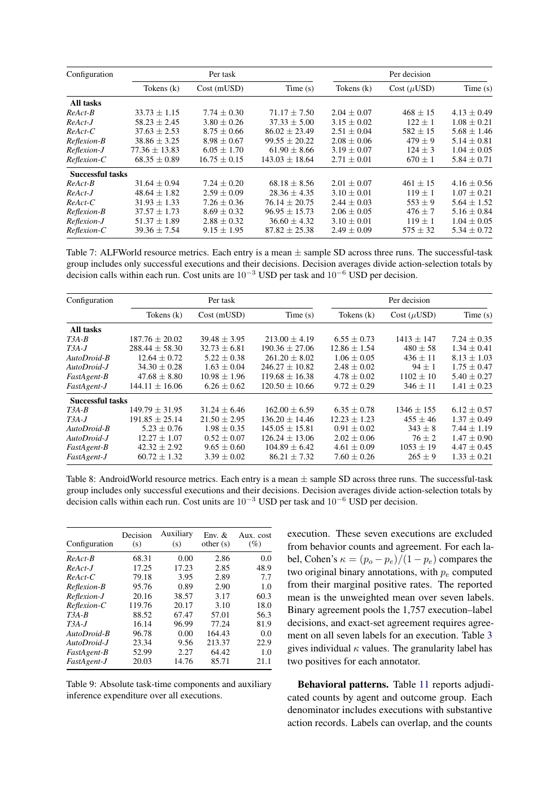
Table 8 · AndroidWorld absolute resourcesمنابع مطلق AndroidWorld
Original table and all printed entries are retained in the source view. Read its caption, units, sample size and footnotes together; values are not estimated from plots.جدول اصلی و تمام مقادیر چاپشده در نمای منبع حفظ شدهاند. عنوان، واحد، اندازه نمونه و پانوشت را با هم بخوانید؛ مقداری از نمودار تخمین زده نشده است.
Table 8 · PDF p. 13Table 9 · Time and auxiliary-cost decompositionتفکیک زمان وهزینه کمکی
Original table and all printed entries are retained in the source view. Read its caption, units, sample size and footnotes together; values are not estimated from plots.جدول اصلی و تمام مقادیر چاپشده در نمای منبع حفظ شدهاند. عنوان، واحد، اندازه نمونه و پانوشت را با هم بخوانید؛ مقداری از نمودار تخمین زده نشده است.
Table 9 · PDF p. 13Table 10 · All paired effect estimates and intervalsتمام برآورد اثرجفتی وبازهها
Original table and all printed entries are retained in the source view. Read its caption, units, sample size and footnotes together; values are not estimated from plots.جدول اصلی و تمام مقادیر چاپشده در نمای منبع حفظ شدهاند. عنوان، واحد، اندازه نمونه و پانوشت را با هم بخوانید؛ مقداری از نمودار تخمین زده نشده است.
Table 10 · PDF p. 14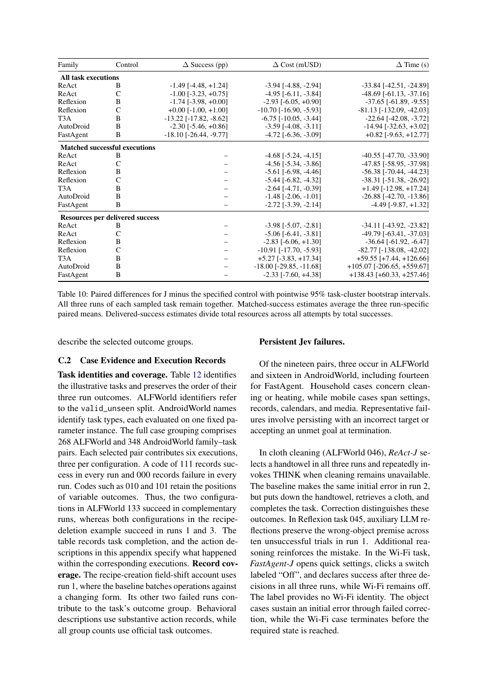
Table 11 · Adjudicated behavior by group/familyرفتار داوریشده گروه/خانواده
Original table and all printed entries are retained in the source view. Read its caption, units, sample size and footnotes together; values are not estimated from plots.جدول اصلی و تمام مقادیر چاپشده در نمای منبع حفظ شدهاند. عنوان، واحد، اندازه نمونه و پانوشت را با هم بخوانید؛ مقداری از نمودار تخمین زده نشده است.
Table 11 · PDF p. 15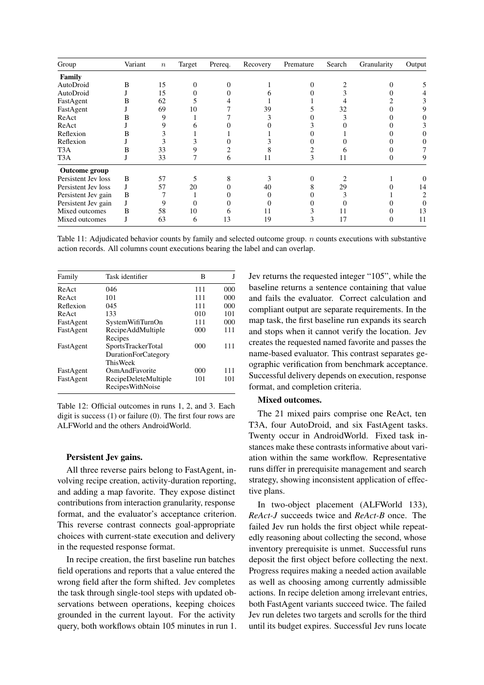
Table 12 · Recorded case task identifiers and runsشناسه وظیفه وتکرار مورد ثبتشده
Original table and all printed entries are retained in the source view. Read its caption, units, sample size and footnotes together; values are not estimated from plots.جدول اصلی و تمام مقادیر چاپشده در نمای منبع حفظ شدهاند. عنوان، واحد، اندازه نمونه و پانوشت را با هم بخوانید؛ مقداری از نمودار تخمین زده نشده است.
Table 12 · PDF p. 15Critical analysis — reviewer assessmentتحلیل انتقادی — ارزیابی مرورگر
Strength: the study retains failed-attempt cost anddistinguishes shared-interface controls. Limitation: outcome-selected trace frequencies are descriptive, not causal estimates of how often Jev causes a specific failure. Its model andexecution-granularity changes remain entangled in some families.قوت: هزینه تلاش شکستخورده وکنترل قراردادمشترک حفظ میشود. محدودیت: فراوانی مسیرمنتخب برحسب پیامد توصیفی است، نه برآوردعلّی فراوانی خطای ناشی از Jev. تغییرمدل ودرشتی اجرای برخی خانوادهها درهمآمیختهاند. Source · PDF p. 3Source · PDF p. 4Source · PDF p. 9Source · PDF p. 12
Do not equate task completion in a benchmark withphysical success in our simulator. A HEMS completion check must inspect actual delivered actions andsubsequent observable state, while retaining hidden ground truth only for independent evaluation.پایان وظیفه معیار را باموفقیت فیزیکی شبیهساز برابرنگیریم. بررسی پایان HEMS باید اقدام تحویلشده واقعی وحالت مشاهدهپذیر بعدی را بسنجد وحقیقت پنهان فقط برای ارزیابی مستقل بماند. Source · PDF p. 8Source · PDF p. 15Source · PDF p. 16
Role in our researchنقش مقاله در پژوهش ما
Why is it important to our research?چرا برای پژوهش ما مهم است؟
Highly relevant to the thesis promise of fast and reliable adaptation: it shows that cheap decisions can coexist with failed recovery or worse resources per successful outcome. It is methodological evidence, not an energy-control result.برایوعده سازگاری سریع وقابل اعتماد بسیارمرتبط است: تصمیم ارزان میتواند با شکست بازیابی یامنبع بیشتر برای موفقیت همراه باشد. شاهد روششناختی است، نه نتیجه کنترل انرژی. Source · PDF p. 1Source · PDF p. 6Source · PDF p. 7Source · PDF p. 8
What does it contribute to our research?چه سهمی در پژوهش ما دارد؟
Adds success-conditioned resource accounting, matched-interface controls, task-cluster repeated evaluation anda transparent recovery/completion taxonomy. These map directly to our P6 execution verification and P8 recovery metrics.حسابداری منبع مشروط به موفقیت، کنترل قراردادمشترک، ارزیابی تکراری خوشهوظیفه وردهبندی شفاف بازیابی/پایان را میدهد؛ مستقیماً به تأییداجرای P6 ومعیاربازیابی P8 وصل میشود. Source · PDF p. 3Source · PDF p. 4Source · PDF p. 7Source · PDF p. 11Source · PDF p. 12
How can we employ it?چگونه از آن استفاده کنیم؟
Proposed adaptation: log operation candidates, target identity, prerequisites, expected state changes, actual feedback and completion checks. Detect repeated lack of progress; report total intervention/Twin/LLM cost across failed andsuccessful recovery attempts andpaired outcomes across fixed fault scenarios.اقتـباس پیشنهادی: ثبت گزینه عملیات، هویت هدف، پیششرط، تغییر موردانتظار، بازخورد واقعی وبررسی پایان. نبود پیشرفت تکراری را تشخیص وکل هزینه مداخله/Twin/LLM درشکست وموفقیت بازیابی وپیامدجفتی سناریوی خطای ثابت راگزارش کنیم. Source · PDF p. 8Source · PDF p. 11Source · PDF p. 12Source · PDF p. 16
Should we implement it as a baseline?آیا باید آن را بهعنوان خطمبنا پیاده کنیم؟
No need to implement AndroidWorld or all five agents as thesis baselines. If Jev enters P7, include matched LLM-Choice and Jev selectors plus our safety/recovery checks; an ablation without progress/completion verification can test that component only if it remains safely sandboxed.پیادهسازی AndroidWorld یاپنجعامل به عنوان پایه پایاننامه لازم نیست. اگر Jev وارد P7 شد، انتخابگر LLM-Choice و Jev باقرارداد یکسان وبررسی ایمنی/بازیابی مقایسه شوند؛ حذف بررسی پیشرفت/پایان فقط درمحیط ایزوله ایمن میتواند اثرآن مؤلفه رابسنجد. Source · PDF p. 3Source · PDF p. 4Source · PDF p. 8Source · PDF p. 9
Original source pagesصفحات اصلی منبع
PDF page 1
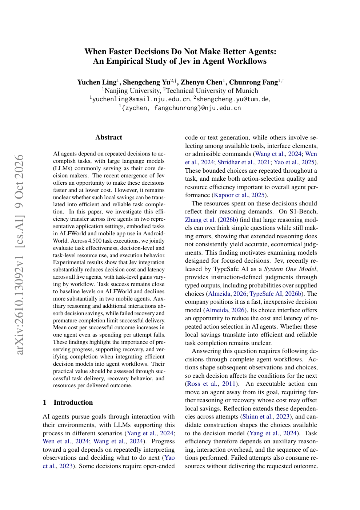
PDF page 2
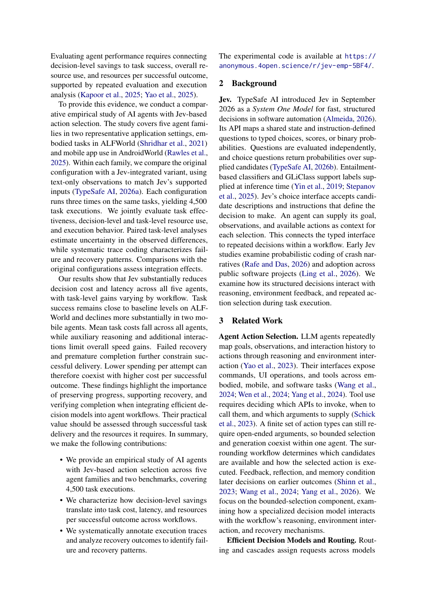
PDF page 3
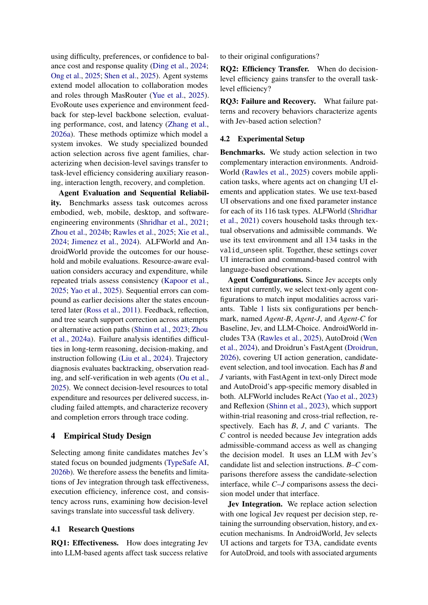
PDF page 5
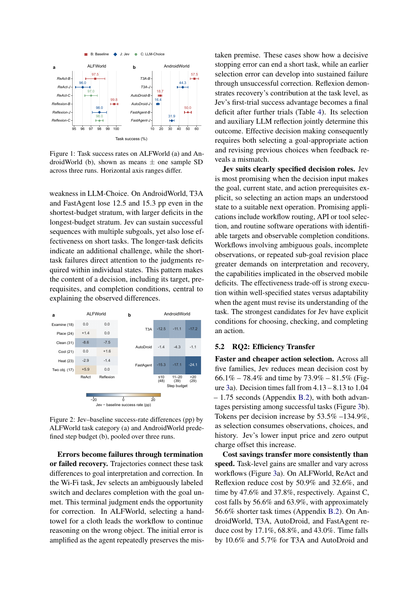
PDF page 6
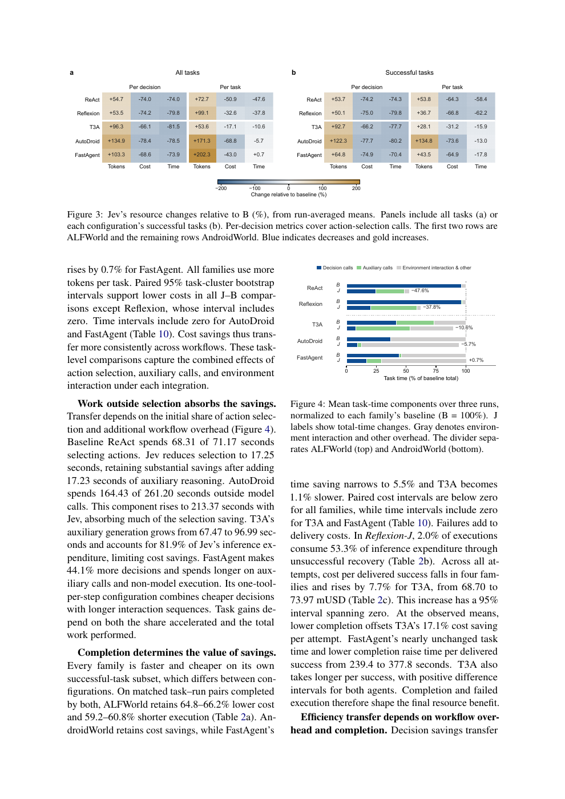
PDF page 9
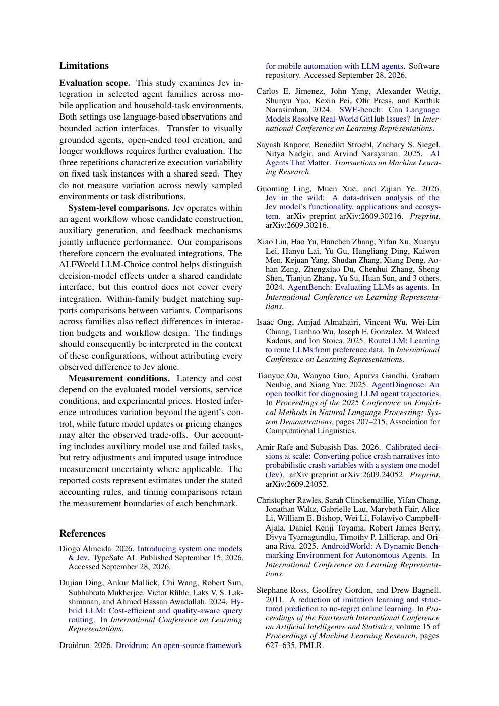
PDF page 10
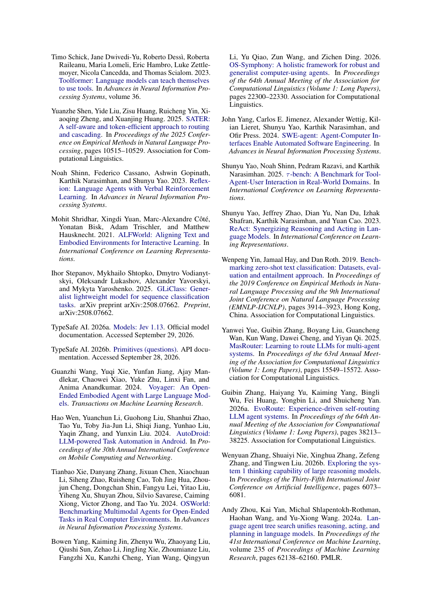
PDF page 11
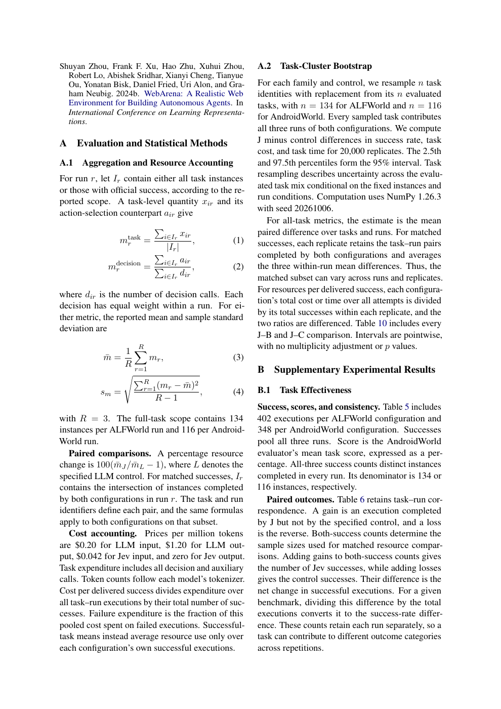
PDF page 16
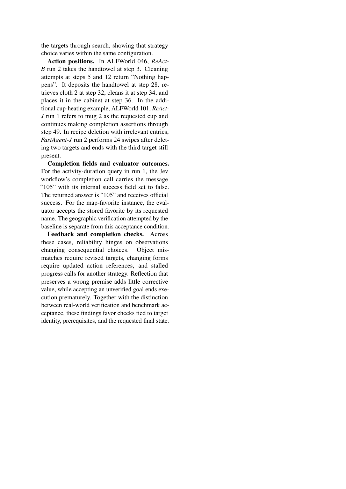
Full bibliographyکتابنامه کامل
Full bibliography transcribed from the source PDF. Original reference pages are the authority for formatting and extraction ambiguities; cited works were not independently analyzed just because they appear here.کتابنامه کامل از PDF منبع استخراج شده است. صفحه اصلی مرجع نگارش و ابهام استخراج است؛ درج منبع به معنی تحلیل مستقل آن اثر نیست.
Diogo Almeida. 2026. Introducing system one models & Jev. TypeSafe AI. Published September 15, 2026. Accessed September 28, 2026. Dujian Ding, Ankur Mallick, Chi Wang, Robert Sim, Subhabrata Mukherjee, Victor Rühle, Laks V . S. Lak- shmanan, and Ahmed Hassan Awadallah. 2024. Hy- brid LLM: Cost-efficient and quality-aware query routing. InInternational Conference on Learning Representations. Droidrun. 2026. Droidrun: An open-source framework for mobile automation with LLM agents. Software repository. Accessed September 28, 2026. Carlos E. Jimenez, John Yang, Alexander Wettig, Shunyu Yao, Kexin Pei, Ofir Press, and Karthik Narasimhan. 2024. SWE-bench: Can Language Models Resolve Real-World GitHub Issues? InInter- national Conference on Learning Representations. Sayash Kapoor, Benedikt Stroebl, Zachary S. Siegel, Nitya Nadgir, and Arvind Narayanan. 2025. AI Agents That Matter.Transactions on Machine Learn- ing Research. Guoming Ling, Muen Xue, and Zijian Ye. 2026. Jev in the wild: A data-driven analysis of the Jev model’s functionality, applications and ecosys- tem. arXiv preprint arXiv:2609.30216.Preprint, arXiv:2609.30216. Xiao Liu, Hao Yu, Hanchen Zhang, Yifan Xu, Xuanyu Lei, Hanyu Lai, Yu Gu, Hangliang Ding, Kaiwen Men, Kejuan Yang, Shudan Zhang, Xiang Deng, Ao- han Zeng, Zhengxiao Du, Chenhui Zhang, Sheng Shen, Tianjun Zhang, Yu Su, Huan Sun, and 3 others. 2024. AgentBench: Evaluating LLMs as agents. In International Conference on Learning Representa- tions. Isaac Ong, Amjad Almahairi, Vincent Wu, Wei-Lin Chiang, Tianhao Wu, Joseph E. Gonzalez, M Waleed Kadous, and Ion Stoica. 2025. RouteLLM: Learning to route LLMs from preference data. InInternational Conference on Learning Representations. Tianyue Ou, Wanyao Guo, Apurva Gandhi, Graham Neubig, and Xiang Yue. 2025. AgentDiagnose: An open toolkit for diagnosing LLM agent trajectories. InProceedings of the 2025 Conference on Empiri- cal Methods in Natural Language Processing: Sys- tem Demonstrations, pages 207–215. Association for Computational Linguistics. Amir Rafe and Subasish Das. 2026. Calibrated deci- sions at scale: Converting police crash narratives into probabilistic crash variables with a system one model (Jev). arXiv preprint arXiv:2609.24052.Preprint, arXiv:2609.24052. Christopher Rawles, Sarah Clinckemaillie, Yifan Chang, Jonathan Waltz, Gabrielle Lau, Marybeth Fair, Alice Li, William E. Bishop, Wei Li, Folawiyo Campbell- Ajala, Daniel Kenji Toyama, Robert James Berry, Divya Tyamagundlu, Timothy P. Lillicrap, and Ori- ana Riva. 2025. AndroidWorld: A Dynamic Bench- marking Environment for Autonomous Agents. In International Conference on Learning Representa- tions. Stephane Ross, Geoffrey Gordon, and Drew Bagnell. 2011. A reduction of imitation learning and struc- tured prediction to no-regret online learning. InPro- ceedings of the Fourteenth International Conference on Artificial Intelligence and Statistics, volume 15 of Proceedings of Machine Learning Research, pages 627–635. PMLR. Timo Schick, Jane Dwivedi-Yu, Roberto Dessì, Roberta Raileanu, Maria Lomeli, Eric Hambro, Luke Zettle- moyer, Nicola Cancedda, and Thomas Scialom. 2023. Toolformer: Language models can teach themselves to use tools. InAdvances in Neural Information Pro- cessing Systems, volume 36. Yuanzhe Shen, Yide Liu, Zisu Huang, Ruicheng Yin, Xi- aoqing Zheng, and Xuanjing Huang. 2025. SATER: A self-aware and token-efficient approach to routing and cascading. InProceedings of the 2025 Confer- ence on Empirical Methods in Natural Language Pro- cessing, pages 10515–10529. Association for Com- putational Linguistics. Noah Shinn, Federico Cassano, Ashwin Gopinath, Karthik Narasimhan, and Shunyu Yao. 2023. Reflex- ion: Language Agents with Verbal Reinforcement Learning. InAdvances in Neural Information Pro- cessing Systems. Mohit Shridhar, Xingdi Yuan, Marc-Alexandre Côté, Yonatan Bisk, Adam Trischler, and Matthew Hausknecht. 2021. ALFWorld: Aligning Text and Embodied Environments for Interactive Learning. In International Conference on Learning Representa- tions. Ihor Stepanov, Mykhailo Shtopko, Dmytro V odianyt- skyi, Oleksandr Lukashov, Alexander Yavorskyi, and Mykyta Yaroshenko. 2025. GLiClass: Gener- alist lightweight model for sequence classification tasks. arXiv preprint arXiv:2508.07662.Preprint, arXiv:2508.07662. TypeSafe AI. 2026a. Models: Jev 1.13. Official model documentation. Accessed September 29, 2026. TypeSafe AI. 2026b. Primitives (questions). API docu- mentation. Accessed September 28, 2026. Guanzhi Wang, Yuqi Xie, Yunfan Jiang, Ajay Man- dlekar, Chaowei Xiao, Yuke Zhu, Linxi Fan, and Anima Anandkumar. 2024. V oyager: An Open- Ended Embodied Agent with Large Language Mod- els.Transactions on Machine Learning Research. Hao Wen, Yuanchun Li, Guohong Liu, Shanhui Zhao, Tao Yu, Toby Jia-Jun Li, Shiqi Jiang, Yunhao Liu, Yaqin Zhang, and Yunxin Liu. 2024. AutoDroid: LLM-powered Task Automation in Android. InPro- ceedings of the 30th Annual International Conference on Mobile Computing and Networking. Tianbao Xie, Danyang Zhang, Jixuan Chen, Xiaochuan Li, Siheng Zhao, Ruisheng Cao, Toh Jing Hua, Zhou- jun Cheng, Dongchan Shin, Fangyu Lei, Yitao Liu, Yiheng Xu, Shuyan Zhou, Silvio Savarese, Caiming Xiong, Victor Zhong, and Tao Yu. 2024. OSWorld: Benchmarking Multimodal Agents for Open-Ended Tasks in Real Computer Environments. InAdvances in Neural Information Processing Systems. Bowen Yang, Kaiming Jin, Zhenyu Wu, Zhaoyang Liu, Qiushi Sun, Zehao Li, JingJing Xie, Zhoumianze Liu, Fangzhi Xu, Kanzhi Cheng, Yian Wang, Qingyun Li, Yu Qiao, Zun Wang, and Zichen Ding. 2026. OS-Symphony: A holistic framework for robust and generalist computer-using agents. InProceedings of the 64th Annual Meeting of the Association for Computational Linguistics (Volume 1: Long Papers), pages 22300–22330. Association for Computational Linguistics. John Yang, Carlos E. Jimenez, Alexander Wettig, Kil- ian Lieret, Shunyu Yao, Karthik Narasimhan, and Ofir Press. 2024. SWE-agent: Agent-Computer In- terfaces Enable Automated Software Engineering. In Advances in Neural Information Processing Systems. Shunyu Yao, Noah Shinn, Pedram Razavi, and Karthik Narasimhan. 2025. τ-bench: A Benchmark for Tool- Agent-User Interaction in Real-World Domains. In International Conference on Learning Representa- tions. Shunyu Yao, Jeffrey Zhao, Dian Yu, Nan Du, Izhak Shafran, Karthik Narasimhan, and Yuan Cao. 2023. ReAct: Synergizing Reasoning and Acting in Lan- guage Models. InInternational Conference on Learn- ing Representations. Wenpeng Yin, Jamaal Hay, and Dan Roth. 2019. Bench- marking zero-shot text classification: Datasets, eval- uation and entailment approach. InProceedings of the 2019 Conference on Empirical Methods in Natu- ral Language Processing and the 9th International Joint Conference on Natural Language Processing (EMNLP-IJCNLP), pages 3914–3923, Hong Kong, China. Association for Computational Linguistics. Yanwei Yue, Guibin Zhang, Boyang Liu, Guancheng Wan, Kun Wang, Dawei Cheng, and Yiyan Qi. 2025. MasRouter: Learning to route LLMs for multi-agent systems. InProceedings of the 63rd Annual Meet- ing of the Association for Computational Linguistics (Volume 1: Long Papers), pages 15549–15572. Asso- ciation for Computational Linguistics. Guibin Zhang, Haiyang Yu, Kaiming Yang, Bingli Wu, Fei Huang, Yongbin Li, and Shuicheng Yan. 2026a. EvoRoute: Experience-driven self-routing LLM agent systems. InProceedings of the 64th An- nual Meeting of the Association for Computational Linguistics (Volume 1: Long Papers), pages 38213– 38225. Association for Computational Linguistics. Wenyuan Zhang, Shuaiyi Nie, Xinghua Zhang, Zefeng Zhang, and Tingwen Liu. 2026b. Exploring the sys- tem 1 thinking capability of large reasoning models. InProceedings of the Thirty-Fifth International Joint Conference on Artificial Intelligence, pages 6073– 6081. Andy Zhou, Kai Yan, Michal Shlapentokh-Rothman, Haohan Wang, and Yu-Xiong Wang. 2024a. Lan- guage agent tree search unifies reasoning, acting, and planning in language models. InProceedings of the 41st International Conference on Machine Learning, volume 235 ofProceedings of Machine Learning Research, pages 62138–62160. PMLR. Shuyan Zhou, Frank F. Xu, Hao Zhu, Xuhui Zhou, Robert Lo, Abishek Sridhar, Xianyi Cheng, Tianyue Ou, Yonatan Bisk, Daniel Fried, Uri Alon, and Gra- ham Neubig. 2024b. WebArena: A Realistic Web Environment for Building Autonomous Agents. In International Conference on Learning Representa- tions.
Bibliography · PDF p. 9Bibliography · PDF p. 10Bibliography · PDF p. 11